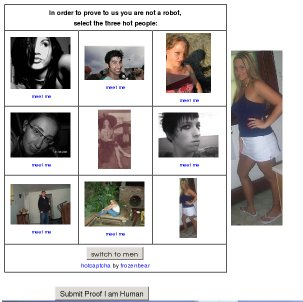

Hot captcha, or CAPTCHA with fun
CAPTCHA or not CAPCTHA… Any anti-spam protection disturbs your visitors. But folks at HotCaptcha.com found a nice trick to compensate the irritating proof-you-are-a-human step. What they do?
They display photos of nine girls (or men), and ask to select the three best persons. The main idea is that only a human can distinguish between beauty and ugliness. It’s the main strength of the approach: bots will never be so smart to analyze people.
Unfortunately, “beauty vs ugliness” is also the main problem. See one of theirs CAPTCHAs:

I am a human, but I can’t select the best faces: everything is equally bad for me. After reloading the page, I get similar disappointing results. And it seems I’m not alone.
There are also two technical disadvantages of HotCaptcha:
* The approach requires JavaScript. Well, in the modern world 99.999% of the users have JavaScript enabled. But many generations of webmasters, including mine, still dislike relying on JavaScript.
* To validate the user response, the code uses the CAPTCHA identifier and the answers. But I don’t see any protection against identity theft. One can:
1) manually pass validation,
2) record the ID and answers, and
3) instruct the spam bot to pretend it answered the captcha with this ID.
In this case, the spam bot doesn’t need to load the page with CAPTCHA at all! Bad, very bad. It’s a big security hole, and this captcha has to be disqualified.
In any case, I like the idea. And I praise the guys behind HotCapctha for their marketing skills and creativity:
* Very nice idea
* Like me, a lot of bloggers have written about HotCaptcha and given a link
* HotCaptcha drives traffic to a dating site. If you like a girl, you can date her!
* Their CAPTCHA is of the web20-style. I think the photos are taken from the dating site, and “beauty vs ugliness” is derived from ratings on that site.
In short, they use CAPTCHA as a promotion tool. Can you do it too? How? Please comment!